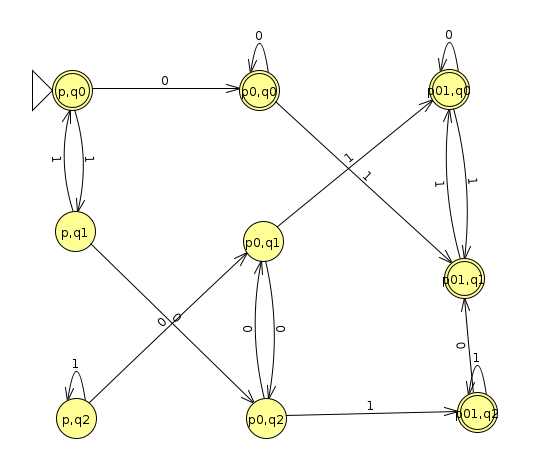
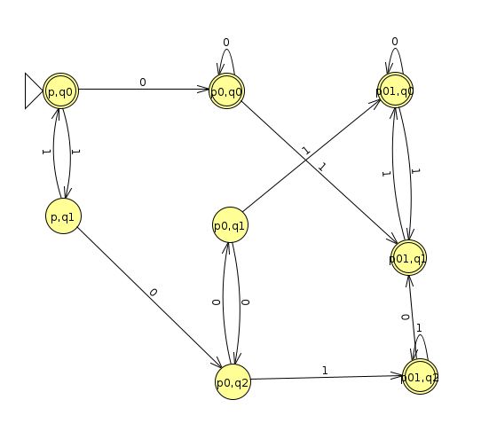

Week 2: Union of Regular Languages
Chris Tralie
Now that we're getting the hang of regular languages, we'll start thinking about how to combine them together to make more complicated regular languages. Often, it's easier to design more complicated regular languages in small pieces and then combine them, just like we write modular code.
To begin, we'll start with the union of two regular languages. If we have a regular language L1 and a regular language L2, then L1 ∪ L2 is the language with strings that are either in L1 OR in L1. In other words, if a DFA M1 recognizes L1 and a DFA M2 recognizes L2, then a string is in the union of L1 and L2 if and only if at least one of M1 or M2 accepts this string.
Proof That The Union of Two Regular Languages is Regular
We can come up with a general strategy for creating a DFA that recognizes L1 ∪ L2 by combining the DFAs that recognize each of them.
Proposition
The union of two regular languages L1 and L2 is regular.
Proof
We will do a "proof by construction" where we design a DFA M = (Q, Σ, δ, q, F) that recognizes L1 ∪ L2. By the definition of regular languages there exist DFAs M1 = (Q1, Σ, δ1, q1, F1) and M2 = (Q2, Σ, δ2, q2, F2) that recognize L1 and L2, respectively. At a high level, we will use the components of M1 and M2 to design a new machine M that simulates both M1 and M2 simultaneously, and which accepts if either one or both of M1 and M2 accepts. More formally, we have the following components of M:
-
\[ Q = Q_1 \times Q_2 \]
In other words, we actually have the machine follow two states at a time: one state in the first machine and one state in the second machine. If there are M states in the first machine and N states in the second machine, then this is MN possible pairs to consider
-
For simplicity, we'll assume that Σ is the same alphabet for L1, L2, and their union
-
The new function is defined as
\[ \delta( (a, b), x ) = (\delta_1(a, x), \delta_2(b, x)) \]
In other words, we think independently about what the first machine does when it's at state a and receives an x character and what the second machine does when it's at state b and it receives an x character.
In example1 below, when we're at (q1, podd), we notice that a 0 moves q1 to q0 and a 0 keeps podd at podd; therefore, (q1, podd) has an arrow to (q0, podd) when a zero is inputted.
-
The start state is simply
\[ q = (q_1, q_2) \]
That is, we start in the start state of each machine
-
The accept states are all of the states that include an accept in the first machine OR an accept in the second machine. Said differently, it doesn't matter what state I'm in in the second machine if I'm in an accept state in the first machine: I will accept. Conversely, it doesn't matter what state I'm in in the first machine if I'm in an accept state in the second machine: I will accept. We can translate these last two sentences into set notation by saying:
\[ F = F_1 \times Q_2 \cup F_2 \times Q_1 \]
In example 1 below, any state that has a podd in it will accept, regardless of what the first machine is doing. So we see that (q0, podd), (q1, podd), and (q2, podd) all accept. Likewise, any state that has a q0 or a q1 in it will accept. This includes (q0, peven), (q0, podd), (q1, peven), and (q1, podd).
Example 1
The nice thing about proofs by construction are they give us a way to apply the steps to real examples in a concrete way. As our first example, let's consider the following two languages
- L1 = {binary strings with no more than 1 ones}
- L2 = {binary strings with an odd number of zeroes}
Here's a machine that recognizes L1 (Click here to download JFLAP file)

Here's a machine that recognizes L2 (Click here to download the JFLAP file)

Here's a machine that puts them together using the cartesian product (Click here to view JFLAP file)

Example 2
For one more example, let's consider the machine that accepts binary strings that contain a 01 or binary strings that are divisible by 3. Below is a machine that recognizes strings that contain a 01 (Click here to download the JFLAP file)

And here's the machine to recognizes binary strings divisible by 3 (Click here to view JFLAP file)

And below is a machine that recognizes the union (Click here to download the JFLAP file)
We can actually simplify this slightly because there are two states that can never be reached from the start:
